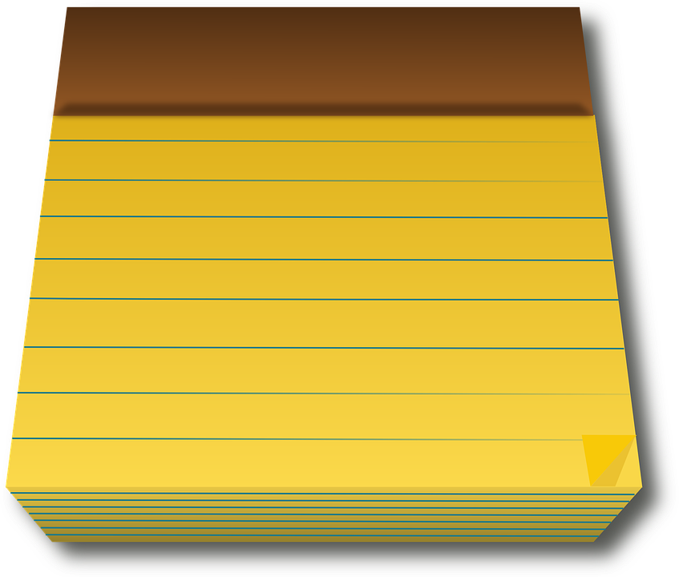

Bienvenue sur notre site de plongée sous-marine O Mergulho do Peixe Vermelho, la Plongée du Poisson Rouge. Vous trouverez sur notre site la présentation des différents niveaux de plongée allant du Niveau 1 au Niveau 4. Vous avez également accès à une présentation de la plongée enfant et de la plongée découverte. Quelques histoires sont également à votre disposition.
Notre centre se situe dans le Sud de la France, au 13 rue de la murène, dans la ville de Belles Bulles à proximité de Marseille. Nous sommes ouvert du lundi au vendredi de 10H00 à 18H00 et le week-end de 13H à 17H00. Pour plus de renseigner, notre onglet contact est accessible dans le menu.